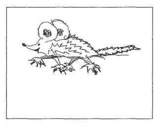
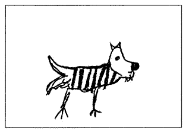

Цель методики: когда ребенок рисует, он переносит, проецирует на бумагу свой внутренний мир, я-образ. Психолог может многое сказать о настроении, склонностях маленького художника, глядя на его произведение. Конечно, один тест не поможет воссоздать точный психологический портрет, но поможет понять, есть ли у ребенка проблемы во взаимоотношениях с окружающим миром.
Для исследования необходимо: стандартный лист белой и простой карандаш средней твердости. Фломастеры и ручки использовать нельзя, мягкие карандаши тоже нежелательны.
Инструкция ребенку: придумать и нарисовать несуществующее животное и назвать его несуществующим именем.
Объясните ребенку, что животное должно быть придумано именно им самим, увлеките его этой задачей - создать такое существо, которого до него никто не придумывал. Это не должен быть уже увиденный когда-то персонаж из мультиков, компьютерных игр или сказок. После того, как рисунок будет готов, расспросите художника о том существе, которое у него получилось. Нужно выяснить пол, возраст, размеры, предназначение необычных органов, если они есть; спросить, есть ли у него сородичи и в каких он с ними отношениях, есть ли у него семья, и кто он в семье, что любит и чего боится, какой у него характер.
Тестируемый неосознанно идентифицирует себя с рисунком, переносит на изображенное существо свои качества и свою роль в обществе. Иногда дети рассказывают от лица животного о своих проблемах. Но это не всегда несет в себе достаточно информации и зависит от способности ребенка анализировать свой внутренний мир. Для нас же важно понять, насколько он адаптирован в коллективе.
Итак, на что следует обратить внимание.
В норме рисунок располагается на средней линии листа или чуть выше и правее. Расположение рисунка ближе к верхнему краю говорит о высокой самооценке и уровне притязаний, которые, по ощущению ребенка, не полностью реализуются. Важно понять, что чем выше расположен рисунок, тем сильнее выражено у ребенка ощущение неудовлетворенности своим положением в обществе, потребность в признании и самоутверждении. Он считает, что достоин большего и может переживать от того, что его недооценили.
Чем ниже расположен рисунок, тем ниже и самооценка ребенка. Неуверенность в себе, нерешительность, отсутствие стремления к самоутверждению - вот что свойственно такому художнику. Ребенок долго помнит неудачи и может вообще отказаться от действия, если не уверен в положительном результате. Он сосредоточен на препятствиях к удовлетворению возникающих у него потребностей.
Сдвиг рисунка вправо говорит о стремлении к контролю над собой, экстраверсии. Чем сильнее рисунок уходит вправо, тем сильнее проявляется "бунтарство" по отношению к чему-то важному для рисующего. Если рисунок расположен в правом верхнем углу, мы можем говорить о том, что ребенок, скорее всего, претендует на лидерство и активно конфликтует с кем-то из других претендентов на эту роль или встал в оппозицию по отношению к уже существующим "правящим". В этом случае "правящими" могут оказаться и родители, и учителя, и дети, пользующиеся полным признанием и авторитетом у остального коллектива.
Сдвиг рисунка влево, возможно, выражает социальную бездеятельность, застенчивость, интроверсию. Эти закономерности могут не работать, если рисунок выходит за край листа.
Мы так детально рассматриваем расположение рисунка именно потому, что сейчас нам важно понять положение ребенка в обществе и его оценку своей позиции. Признак дезадаптированности - недовольство своей ролью в коллективе, и на это необходимо обратить особое внимание. Так как расположение рисунка - только один из критериев, в процессе анализа наши предположения будут уточняться или даже изменяться. Поэтому продолжим рассматривать рисунок.
Это центральная смысловая часть фигуры. Если она повернута вправо, то художнику присущи высокая целеустремленность и активность, которые взрослые иногда принимают за излишнее упрямство. Важно понять, что его планы реалистичны и осуществимы, и не мешать, а помогать ребенку ставить перед собой задачи и добиваться результата.
Поворот головы влево характеризует тестируемого как человека, склонного к размышлению, фантазированию, его мечты часто существуют только в его воображении и не реализуются в действительности. Возможно, это просто склад характера, но такая ситуация может возникнуть под страхом неудачи, который ведет к потере активности, поэтому необходимо обратить на это внимание.
Изображение с головой в положении анфас говорит о присутствии эгоцентризма или бесконтрольности в поведении.
Если голова значительно крупнее по размеру, чем тело, возможно, ребенок высоко ценит интеллектуальные качества в себе и окружающих.
Крупные, с четко прорисованной радужкой глаза могут означать, что ребенка мучает постоянный страх.
Прорисовка ресниц - показатель заинтересованности в восхищении со стороны окружающих, всеобщем признании своей привлекательности.
Зубастое существо рисуют дети, которым свойственная словесная агрессия защитного характера. Их грубость следует воспринимать как способ самозащиты от нападок окружающих.
Язык обозначает потребность в речевой активности, авторы такого существа - большие болтушки.
Открытый рот без прорисовки губ и языка, особенно закрашенный, заштрихованный - признак готовности испугаться, такие дети часто недоверчивы и опасливы.
Если они есть, это знак того, что ребенку важно мнение и информация окружающих о нем самом. Чем больше ушей, тем больше внимания ребенок обращает на то, что о нем думают и говорят.
Рога - защита от агрессии. В сочетании с когтями и щетиной - агрессия спонтанная или защитно-ответная.
Перья - стремление к самоутверждению, самооправданию, демонстративности.
Грива, шерсть, подобие прически - чувствительность.
О легкомысленности, импульсивности, поверхностности суждений свидетельствует изображение облегченной опорной части - маленькие лапки, например.
Способ соединения опоры и самого туловища говорит о степени контроля за своими суждениями и решениями. Точное и тщательное соединение - высокий уровень, небрежное и слабое - склонность к необдуманным поступкам или неуверенность в своем мнении.
Бывает, что у фигуры появляются части, которые возвышаются над общими очертаниями рисунка. Это могут быть крылья, дополнительные конечности, щупальца, детали панциря, перья... Они могут служить украшением или носить утилитарный характер. Спросите ребенка, для чего они предназначены. Если они нужны для какого-то вида деятельности животного, скорее всего, тестируемый энергичен, стремится к самоутверждению. Декоративные части рисуют дети, стремящиеся обратить на себя внимание окружающих.
Если он повернут влево - мы может судить о самооценке мыслей и решений, вправо - действий и поведения.
Хвост, поднятый вверх, означает положительную самооценку, бодрость.
Опущенный вниз - недовольство собой, сомнение в своих силах, сожаление о сказанном и сделанном.
Разветвленные хвосты, несколько хвостов - зависимость или противоречивость самооценки.
Два хвоста развернуты в стороны и у животного большие уши - самооценка ребенка сильно зависит от мнения окружающих.
Анализируя контуры фигуры, обратите внимание на выступы типа ребристого панциря, шипов или наростов и тому подобных деталей. Они отражают особенности психологической защиты ребенка. Степень агрессивной защиты характеризуется наличием острых выступов и их направленностью. Поднятые вверх, они говорят о том, что ребенок защищается от людей, имеющих над ним власть и возможность подавить, запретить, ограничить его в чем-либо. Это могут быть родители, старшие дети, воспитатели, учителя.
Если защитные элементы направлены вниз, это может обозначать, что ребенок боится быть непризнанным, стать объектом насмешек, или переживает, что уже находится в таком положении, боится потерять авторитет у детей.
Выступы по бокам рисуют дети, ожидающие опасности со всех сторон в любой ситуации и готовые к защите.
Но жирные, с нажимом, линии, штриховка свойственны не энергичным, а тревожным детям. Обратите внимание на то, какиедетали выполнены с особым нажимом, чтобы определить, что именно может тревожить ребенка. Но, конечно, нужно учесть, чтоесли ребенок учится рисовать в студии или просто увлекается этим самостоятельно, штриховка будет присутствовать просто как элемент рисунка.
Необычные детали - например, вмонтированные в тело механические предметы - могут быть признаком психопатологии или просто проявлением особой оригинальности, как, впрочем, и отголоском чрезмерного увлечения роботами и научной фантастикой.
Имя, которое присвоил ребенок своему созданию, несет информацию о характере ребенка.
Рациональное содержание смысловых частей - летающий заяц, бегокот и тому подобное - говорит о рациональном складе ума ребенка.
Словообразования с книжно-научным, латинским окончанием - рептилиус - выражает стремление подчеркнуть уровень своего развития, эрудиции.
Поверхностно-звуковые, без всякого осмысливания, слова говорят о легкомысленном отношении к окружающему.
Иронично-юмористичные - пузыроид, пельмеш - выражает такое же иронично-снисходительное отношение и к действительности.
Повторяющиеся элементы - тру-тру, кус-кус - возможно, обозначают инфантильность.
Непомерно длинные названия могут давать дети, склонные к фантазированию, что, возможно, имеет защитный характер как способ ухода от действительности.
Теперь, когда вы проанализировали все детали, выпишите их все, рассмотрите полученные результаты и сведите их в одно целое. Полноценный психологический портрет, как я уже говорила, невозможно составить с помощью одного теста, но именно рисуночная методика, насколько показывает мой опыт, выявляет дезадаптацию ребенка в обществе.
Попробуйте проверить своего ребенка, пусть это будет для него игрой, подключите знакомых и близких, только предупредите, что умение рисовать в этом деле не имеет никакого значения и все тестируемые могут вволю пофантазировать.
Рисунок №1.

Рисунок №2.

Рисунок тихой, замкнутой девочки, ученицы 5 класса Нади С. Послушная, старательная в учебе, но ее как будто нет в классе.